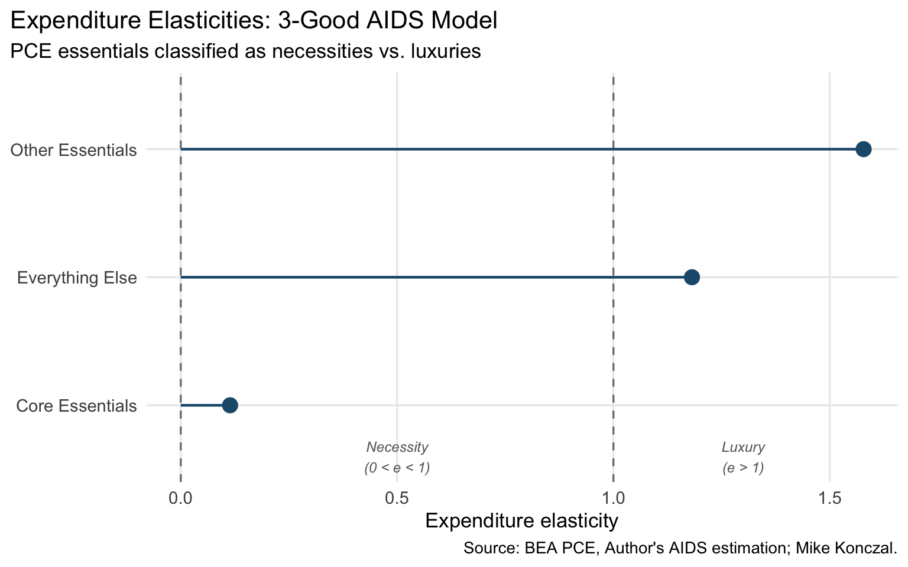
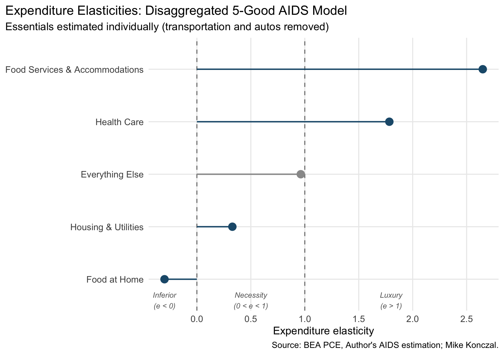

Show code
coef_df <- read_csv("data/aids_coefficients.csv")
elasticities <- read_csv("data/aids_elasticities.csv")Previous analysis showed that consumer budget shares devoted to essentials—housing, food at home, health care, transportation, and motor vehicles—rose after the pandemic, and that essentials prices outpaced overall PCE inflation. But a rising budget share could reflect two very different forces. Consumers might be paying more for the same basket of essentials because prices went up. Or consumers might be choosing to buy more essentials—perhaps because their incomes grew, or because they shifted preferences. An Almost Ideal Demand System (AIDS) model lets us formally separate these two channels and classify each good as a necessity or luxury.
This analysis presents two versions of the model. First, a compact 3-good version that groups essentials into two bundles—“Core Essentials” and “Other Essentials”—to get the big picture. Second, a disaggregated 7-good version that breaks all the essential categories apart and adds food services and accommodations, revealing important differences hidden inside those bundles.
The data come from the Bureau of Economic Analysis (BEA) Personal Consumption Expenditures (PCE) tables, pulled at a monthly frequency. PCE is the most comprehensive measure of U.S. consumer spending, covering all goods and services purchased by households—including items paid for on their behalf, such as employer-provided health insurance. For each PCE category, we observe a price index, a quantity index, and an expenditure weight (the category’s share of total PCE).
We use data from January 2010 onward, giving us roughly 15 years of monthly observations that span the post-Great Recession recovery, the pandemic shock, and the subsequent inflation episode. The PCE categories used here correspond to standard BEA line items: “Housing and utilities,” “Food and beverages purchased for off-premises consumption,” “Health care,” “Transportation services,” “Motor vehicles and parts,” and “Food services and accommodations.” The residual—“Everything Else”—is everything in PCE not covered by those categories, including clothing, recreation, financial services, and other discretionary spending.
Budget shares (expenditure weights) sum to 1 across all PCE categories in each month, which is the adding-up property that the AIDS model exploits. Price indices for aggregate bundles are constructed as Törnqvist indices—a standard chain-weighted approach that uses the average of adjacent-period expenditure shares as weights when aggregating component price changes.
The Linear Approximate AIDS (LA/AIDS) model, introduced by Deaton and Muellbauer (1980), is one of the most widely used tools in applied demand analysis. It models each good’s budget share—the fraction of total spending devoted to that good—as a function of all goods’ prices and total real expenditure. The intuition is straightforward: when prices or incomes change, consumers reallocate their spending, and the model captures those responses in a few key elasticities.
The two most important outputs are:
Expenditure elasticity: If total consumer spending rises by 1%, how much does spending on this particular good rise? An elasticity between 0 and 1 identifies a necessity—spending on it grows, but more slowly than the overall budget, so its budget share falls as consumers get richer. Think groceries: as incomes rise, people spend more on food in dollar terms, but food becomes a smaller share of their budget. An elasticity above 1 marks a luxury (its share rises with income), and below 0 an inferior good (consumers actively spend less on it as they grow richer).
Own-price elasticity: If this good’s price rises by 1%, how much does the quantity consumed change? A Marshallian (uncompensated) elasticity captures the total response, including the fact that higher prices make consumers poorer in real terms. A Hicksian (compensated) elasticity isolates pure substitution—would consumers switch to other goods even if we held their purchasing power constant? Goods that are price-inelastic (elasticity close to zero) are hard to substitute away from, which is exactly what we expect for essentials like housing and medical care.
For the affordability question, the key combination is essentials that are both necessities (low expenditure elasticity) and price-inelastic: when their prices rise faster than average, budget shares increase mechanically because consumers cannot easily cut back or switch.
Both models are estimated via Seemingly Unrelated Regression (SUR), which accounts for the fact that budget-share equations are correlated—if consumers spend more on housing, they necessarily spend less on something else. We impose two standard theoretical restrictions from consumer theory: homogeneity (only relative prices matter, not the absolute price level—implemented by expressing all prices relative to the residual good’s price) and Slutsky symmetry (the cross-price effect of good A on good B equals the effect of B on A, after controlling for income effects). Elasticities are computed at sample-mean budget shares.
We start by grouping PCE categories into three broad goods:
| Good | PCE Components | ~Mean Budget Share |
|---|---|---|
| Core Essentials | Housing & utilities + Food at home | ~26% |
| Other Essentials | Health care + Transportation services + Motor vehicles & parts | ~24% |
| Everything Else | All remaining PCE | ~51% |
coef_df <- read_csv("data/aids_coefficients.csv")
elasticities <- read_csv("data/aids_elasticities.csv")The table below shows the raw SUR coefficient estimates. Each equation models one good’s budget share as a function of relative log prices, log real expenditure, and a time trend. The expenditure coefficient (\(\beta\)) is the most economically meaningful: a negative value means the good’s share falls when total spending rises (a necessity), while a positive value means its share rises (a luxury).
coef_df %>%
mutate(
term = str_replace(term, "core_", "Core: ") %>%
str_replace("other_", "Other: ") %>%
str_replace("\\(Intercept\\)", "Intercept") %>%
str_replace("lnp1_rel", "ln(p_core/p_resid)") %>%
str_replace("lnp2_rel", "ln(p_other/p_resid)") %>%
str_replace("lnXPstar", "ln(X/P*)") %>%
str_replace("trend", "Trend")
) %>%
gt() %>%
tab_header(title = "3-Good LA/AIDS: SUR Coefficient Estimates") %>%
fmt_number(columns = c(estimate, std_error, t_value), decimals = 4) %>%
fmt_number(columns = p_value, decimals = 4) %>%
cols_label(
term = "Term",
estimate = "Estimate",
std_error = "Std. Error",
t_value = "t",
p_value = "p-value"
)| 3-Good LA/AIDS: SUR Coefficient Estimates | ||||
|---|---|---|---|---|
| Term | Estimate | Std. Error | t | p-value |
| Core: Intercept | 2.3002 | 0.1235 | 18.6274 | 0.0000 |
| Core: ln(p_core/p_resid) | 0.1470 | 0.0224 | 6.5718 | 0.0000 |
| Core: ln(p_other/p_resid) | 0.0292 | 0.0254 | 1.1498 | 0.2510 |
| Core: ln(X/P*) | −0.2283 | 0.0138 | −16.4919 | 0.0000 |
| Core: Trend | 0.0003 | 0.0000 | 8.6571 | 0.0000 |
| Other: Intercept | −0.9818 | 0.1548 | −6.3439 | 0.0000 |
| Other: ln(p_core/p_resid) | 0.0292 | 0.0254 | 1.1498 | 0.2510 |
| Other: ln(p_other/p_resid) | 0.0598 | 0.0366 | 1.6345 | 0.1030 |
| Other: ln(X/P*) | 0.1363 | 0.0173 | 7.8569 | 0.0000 |
| Other: Trend | −0.0003 | 0.0000 | −7.1826 | 0.0000 |
The elasticities below are computed at sample-mean budget shares. The expenditure elasticity tells us whether each good is a necessity or luxury; the own-price elasticities tell us how responsive quantity demanded is to price changes.
elasticities %>%
gt() %>%
tab_header(title = "3-Good AIDS: Elasticities at Sample Means") %>%
fmt_number(columns = c(mean_share, expenditure_elasticity,
marshallian_own_price, hicksian_own_price), decimals = 3) %>%
cols_label(
good = "Good",
mean_share = "Mean Share",
expenditure_elasticity = "Expenditure",
marshallian_own_price = "Marshallian",
hicksian_own_price = "Hicksian",
classification = "Type"
) %>%
tab_spanner(label = "Own-Price Elasticity", columns = c(marshallian_own_price, hicksian_own_price))| 3-Good AIDS: Elasticities at Sample Means | |||||
|---|---|---|---|---|---|
| Good | Mean Share | Expenditure |
Own-Price Elasticity
|
Type | |
| Marshallian | Hicksian | ||||
| Core Essentials | 0.258 | 0.114 | −0.201 | −0.172 | Necessity |
| Other Essentials | 0.236 | 1.578 | −0.882 | −0.510 | Luxury |
| Everything Else | 0.507 | 1.182 | −0.568 | 0.030 | Luxury |
ggplot(elasticities, aes(x = expenditure_elasticity,
y = reorder(good, expenditure_elasticity))) +
geom_vline(xintercept = 0, linetype = "dashed", color = "grey50") +
geom_vline(xintercept = 1, linetype = "dashed", color = "grey50") +
geom_segment(aes(xend = 0, yend = good), color = "#1F5A7A", linewidth = 0.8) +
geom_point(size = 4, color = "#1F5A7A") +
annotate("text", x = 0.5, y = 0.6, label = "Necessity\n(0 < e < 1)",
color = "grey40", size = 3.2, fontface = "italic") +
annotate("text", x = 1.3, y = 0.6, label = "Luxury\n(e > 1)",
color = "grey40", size = 3.2, fontface = "italic") +
scale_x_continuous(breaks = seq(-0.5, 2, 0.5)) +
labs(
title = "Expenditure Elasticities: 3-Good AIDS Model",
subtitle = "PCE essentials classified as necessities vs. luxuries",
x = "Expenditure elasticity",
y = NULL,
caption = "Source: BEA PCE, Author's AIDS estimation; Mike Konczal."
) +
theme_minimal(base_size = 13) +
theme(
plot.title.position = "plot",
panel.grid.minor = element_blank(),
axis.text.x = element_text(size = 11),
axis.text.y = element_text(size = 11)
)
ggsave("graphics/aids_elasticities.png", width = 8, height = 5, dpi = 150)Core Essentials—housing and food at home—are clearly a necessity, with an expenditure elasticity well below 1. This is the classic Engel’s Law result: as consumers’ total spending rises, the share going to shelter and groceries falls. Core Essentials are also price-inelastic, meaning consumers do not significantly reduce their housing or food consumption when prices rise. This is the combination that makes post-pandemic inflation so painful for household budgets.
The “Other Essentials” bundle, however, registers as a luxury in this aggregated specification. This is surprising at first glance—health care and transportation are things people need. But aggregation can mislead. When we lump health care (whose spending is heavily driven by insurance and medical system dynamics) together with motor vehicles (a big-ticket durable whose purchases are highly cyclical), the bundle’s behavior gets dominated by components that move with the business cycle rather than reflecting the necessity character of, say, a doctor visit. This motivates the disaggregated model below.
To see what is really going on inside the essentials, we now estimate a 5-good AIDS model that treats each category individually and adds food services and accommodations—restaurants, hotels, and takeout—as a separate good. We drop transportation services and motor vehicles here to focus on the major household-facing budget categories.
| Good | ~Mean Budget Share |
|---|---|
| Housing & Utilities | ~18% |
| Food at Home | ~8% |
| Food Services & Accommodations | ~7% |
| Health Care | ~17% |
| Everything Else (residual) | ~51% |
This is the same LA/AIDS framework, now with four estimated equations (the fifth—“Everything Else”—is implied by the budget constraint). With four goods being estimated, we impose 6 Slutsky symmetry restrictions on the cross-price coefficients. The model is again estimated by SUR on monthly data from 2010 onward.
coef5_df <- read_csv("data/aids5_coefficients.csv")
elasticities5 <- read_csv("data/aids5_elasticities.csv")
get_elast <- function(good_name, col, digits = 2) {
val <- elasticities5[elasticities5$good == good_name, col][[1]]
if (length(val) == 0) {
return(NA_real_)
}
round(val[1], digits)
}With six equations and eight regressors each (intercept, six relative prices, real expenditure, and a trend), there are many coefficients. The most important to scan are the expenditure terms (ln(X/P*)) and own-price terms (e.g., ln(p_housing/p_resid) in the housing equation). The cross-price coefficients capture substitution and complementarity patterns between goods.
coef5_df %>%
mutate(
term = term %>%
str_replace("housing_", "Housing: ") %>%
str_replace("food_", "Food: ") %>%
str_replace("foodsvc_", "Food Svc: ") %>%
str_replace("health_", "Health: ") %>%
str_replace("\\(Intercept\\)", "Intercept") %>%
str_replace("lnp_h", "ln(p_housing/p_resid)") %>%
str_replace("lnp_f", "ln(p_food/p_resid)") %>%
str_replace("lnp_s", "ln(p_foodsvc/p_resid)") %>%
str_replace("lnp_c", "ln(p_health/p_resid)") %>%
str_replace("lnXP5", "ln(X/P*)") %>%
str_replace("trend", "Trend")
) %>%
gt() %>%
tab_header(title = "5-Good LA/AIDS: SUR Coefficient Estimates") %>%
fmt_number(columns = c(estimate, std_error, t_value), decimals = 4) %>%
fmt_number(columns = p_value, decimals = 4) %>%
cols_label(
term = "Term",
estimate = "Estimate",
std_error = "Std. Error",
t_value = "t",
p_value = "p-value"
)| 5-Good LA/AIDS: SUR Coefficient Estimates | ||||
|---|---|---|---|---|
| Term | Estimate | Std. Error | t | p-value |
| Housing: Intercept | 1.2722 | 0.1046 | 12.1654 | 0.0000 |
| Housing: ln(p_housing/p_resid) | 0.2280 | 0.0181 | 12.5677 | 0.0000 |
| Housing: ln(p_food/p_resid) | 0.0559 | 0.0080 | 7.0213 | 0.0000 |
| Housing: ln(p_foodsvc/p_resid) | −0.1422 | 0.0147 | −9.6642 | 0.0000 |
| Housing: ln(p_health/p_resid) | −0.0497 | 0.0103 | −4.8212 | 0.0000 |
| Housing: ln(X/P*) | −0.1214 | 0.0117 | −10.3484 | 0.0000 |
| Housing: Trend | 0.0001 | 0.0000 | 2.2382 | 0.0255 |
| Food: Intercept | 0.9695 | 0.0752 | 12.8902 | 0.0000 |
| Food: ln(p_housing/p_resid) | 0.0559 | 0.0080 | 7.0213 | 0.0000 |
| Food: ln(p_food/p_resid) | 0.0155 | 0.0067 | 2.3199 | 0.0206 |
| Food: ln(p_foodsvc/p_resid) | −0.0199 | 0.0094 | −2.1192 | 0.0344 |
| Food: ln(p_health/p_resid) | 0.0099 | 0.0075 | 1.3121 | 0.1899 |
| Food: ln(X/P*) | −0.0999 | 0.0084 | −11.8516 | 0.0000 |
| Food: Trend | 0.0002 | 0.0000 | 7.4250 | 0.0000 |
| Food Svc: Intercept | −0.9222 | 0.0898 | −10.2695 | 0.0000 |
| Food Svc: ln(p_housing/p_resid) | −0.1422 | 0.0147 | −9.6642 | 0.0000 |
| Food Svc: ln(p_food/p_resid) | −0.0199 | 0.0094 | −2.1192 | 0.0344 |
| Food Svc: ln(p_foodsvc/p_resid) | 0.1571 | 0.0234 | 6.7035 | 0.0000 |
| Food Svc: ln(p_health/p_resid) | −0.0201 | 0.0107 | −1.8797 | 0.0605 |
| Food Svc: ln(X/P*) | 0.1102 | 0.0101 | 10.9530 | 0.0000 |
| Food Svc: Trend | −0.0002 | 0.0000 | −7.3627 | 0.0000 |
| Health: Intercept | −0.9971 | 0.1023 | −9.7467 | 0.0000 |
| Health: ln(p_housing/p_resid) | −0.0497 | 0.0103 | −4.8212 | 0.0000 |
| Health: ln(p_food/p_resid) | 0.0099 | 0.0075 | 1.3121 | 0.1899 |
| Health: ln(p_foodsvc/p_resid) | −0.0201 | 0.0107 | −1.8797 | 0.0605 |
| Health: ln(p_health/p_resid) | 0.1617 | 0.0108 | 14.9424 | 0.0000 |
| Health: ln(X/P*) | 0.1300 | 0.0115 | 11.3391 | 0.0000 |
| Health: Trend | −0.0002 | 0.0000 | −7.3897 | 0.0000 |
Now we can see each category on its own terms. The expenditure elasticities are the most reliable and economically interpretable output of the model—they tell us how each good’s budget share responds to changes in total spending.
elasticities5 %>%
gt() %>%
tab_header(title = "5-Good AIDS: Elasticities at Sample Means") %>%
fmt_number(columns = c(mean_share, expenditure_elasticity,
marshallian_own_price, hicksian_own_price), decimals = 3) %>%
cols_label(
good = "Good",
mean_share = "Mean Share",
expenditure_elasticity = "Expenditure",
marshallian_own_price = "Marshallian",
hicksian_own_price = "Hicksian",
classification = "Type"
) %>%
tab_spanner(label = "Own-Price Elasticity", columns = c(marshallian_own_price, hicksian_own_price))| 5-Good AIDS: Elasticities at Sample Means | |||||
|---|---|---|---|---|---|
| Good | Mean Share | Expenditure |
Own-Price Elasticity
|
Type | |
| Marshallian | Hicksian | ||||
| Housing & Utilities | 0.181 | 0.329 | 0.382 | 0.442 | Necessity |
| Food at Home | 0.077 | −0.300 | −0.698 | −0.721 | Inferior |
| Food Services & Accommodations | 0.067 | 2.649 | 1.241 | 1.418 | Luxury |
| Health Care | 0.166 | 1.784 | −0.156 | 0.140 | Luxury |
| Everything Else | 0.510 | 0.963 | −0.530 | −0.039 | Necessity |
elasticities5 <- elasticities5 %>%
mutate(
is_essential = good != "Everything Else",
good_label = factor(good, levels = good[order(expenditure_elasticity)])
)
ggplot(elasticities5, aes(x = expenditure_elasticity, y = good_label,
color = is_essential)) +
geom_vline(xintercept = 0, linetype = "dashed", color = "grey50") +
geom_vline(xintercept = 1, linetype = "dashed", color = "grey50") +
geom_segment(aes(xend = 0, yend = good_label), linewidth = 0.8) +
geom_point(size = 4) +
scale_color_manual(values = c("TRUE" = "#1F5A7A", "FALSE" = "grey60"),
guide = "none") +
annotate("text", x = 0.5, y = 0.6, label = "Necessity\n(0 < e < 1)",
color = "grey40", size = 3.2, fontface = "italic") +
annotate("text", x = 1.8, y = 0.6, label = "Luxury\n(e > 1)",
color = "grey40", size = 3.2, fontface = "italic") +
annotate("text", x = -0.3, y = 0.6, label = "Inferior\n(e < 0)",
color = "grey40", size = 3.2, fontface = "italic") +
scale_x_continuous(breaks = seq(-1, 3, 0.5)) +
labs(
title = "Expenditure Elasticities: Disaggregated 5-Good AIDS Model",
subtitle = "Essentials estimated individually (transportation and autos removed)",
x = "Expenditure elasticity",
y = NULL,
caption = "Source: BEA PCE, Author's AIDS estimation; Mike Konczal."
) +
theme_minimal(base_size = 13) +
theme(
plot.title.position = "plot",
panel.grid.minor = element_blank(),
axis.text.x = element_text(size = 11),
axis.text.y = element_text(size = 11)
)
ggsave("graphics/aids5_elasticities.png", width = 8.5, height = 6, dpi = 150)Breaking the bundles apart reveals a much richer picture of how consumers allocate spending across essentials. For each category, the three elasticities describe how budgets respond to income and prices.
Housing & Utilities
In plain terms: housing is hard to avoid, so higher shelter costs squeeze budgets.
Food at Home
In plain terms: as people get richer they eat out more, but grocery prices still hit budgets because food is hard to cut.
Food Services & Accommodations
In plain terms: dining out expands when people feel flush and is more discretionary than groceries.
Health Care
In plain terms: health spending rises with the economy, driven by insurance, technology, and system-level costs.
Everything Else
In plain terms: the remaining categories move with income and act as the flexible part of the household budget.
The own-price elasticities in the disaggregated model should be interpreted with some caution. With five goods and only relative-price variation to identify the parameters, multicollinearity among price indices can produce noisy or economically implausible own-price estimates for individual categories (including occasional positive estimates). The expenditure elasticities are more robustly identified because total real expenditure varies more independently of any single good’s price. For the affordability story, the expenditure elasticities—which determine the necessity/luxury classification—are the key results.
The disaggregated model sharpens the affordability narrative in several ways:
Housing is the main affordability pressure. It is the largest essential, firmly a necessity, and consumers have almost no margin to adjust when rents and utility costs rise. The budget share devoted to housing rises nearly mechanically with housing-price inflation.
Food inflation hits differently by income. The food-at-home / food-services split captures a fundamental asymmetry: grocery prices matter most for lower-income households (who eat at home disproportionately), while restaurant prices matter more for higher-income households. The inferior-good classification for food at home and luxury classification for food services makes this precise.
The “Other Essentials” luxury result was partly an aggregation artifact. Health care’s luxury-like behavior (driven by institutional dynamics) was pulling the 3-good bundle’s expenditure elasticity above 1. Disaggregation reveals that the story is not “Other Essentials are luxuries” but rather “health spending grows with the economy for structural reasons.”
The core affordability mechanism holds. For the goods that matter most to household budgets—housing and food at home—the pattern is the same in both specifications: low expenditure elasticity and therefore a near-mechanical increase in budget shares when relative prices rise. This is what makes the post-pandemic inflation episode feel so consequential for everyday consumers, even as aggregate real income has recovered.